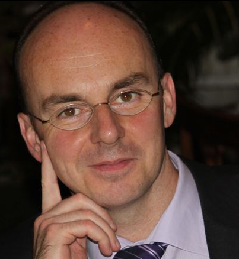

We develop the fundamental limits of learning in deep neural networks by characterizing what is possible if no constraints on the learning algorithm and the amount of training data are imposed. Concretely, we consider Kolmogorov-optimal approximation through deep neural networks with the guiding theme being a relation between the complexity of the function (class) to be approximated and the complexity of the approximating network in terms of connectivity and memory requirements for storing the network topology and the associated quantized weights. The theory we develop educes remarkable universality properties of deep networks. Specifically, deep networks are optimal approximants for vastly different function classes such as affine systems and Gabor systems. In addition, deep networks provide exponential approximation accuracy—i.e., the approximation error decays exponentially in the number of non-zero weights in the network—of widely different functions including the multiplication operation, polynomials, sinusoidal functions, general smooth functions, and even one-dimensional oscillatory textures and fractal functions such as the Weierstrass function, both of which do not have any known methods achieving exponential approximation accuracy. We also show that in the approximation of sufficiently smooth functions finite-width deep networks require strictly smaller connectivity than finite-depth wide networks

Speaker Biography:
Helmut Bölcskei was born in Mödling, Austria on May
29, 1970, and received the Dipl.-Ing. and Dr. techn. degrees in
electrical engineering from Vienna University of Technology, Vienna,
Austria, in 1994 and 1997, respectively. In 1998 he was with Vienna
University of Technology. From 1999 to 2001 he was a postdoctoral
researcher in the Information Systems Laboratory, Department of
Electrical Engineering, and in the Department of Statistics, Stanford
University, Stanford, CA. He was in the founding team of Iospan Wireless
Inc., a Silicon Valley-based startup company (acquired by Intel
Corporation in 2002) specialized in multiple-input multiple-output
(MIMO) wireless systems for high-speed Internet access, and was a
co-founder of Celestrius AG, Zurich, Switzerland. From 2001 to 2002 he
was an Assistant Professor of Electrical Engineering at the University
of Illinois at Urbana-Champaign. He has been with ETH Zurich since 2002,
where he is a Professor of Mathematical Information Science in the
Department of Electrical Engineering, also associated with the
Department of Mathematics. He was a visiting researcher at Philips
Research Laboratories Eindhoven, The Netherlands, ENST Paris, France,
and the Heinrich Hertz Institute Berlin, Germany. His research interests
are in applied mathematics, machine learning theory, mathematical signal
processing, data science, and statistics.
He received the 2001 IEEE Signal Processing Society Young Author Best
Paper Award, the 2006 IEEE Communications Society Leonard G. Abraham
Best Paper Award, the 2010 Vodafone Innovations Award, the ETH "Golden
Owl" Teaching Award, is a Fellow of the IEEE, a 2011 EURASIP Fellow, was
a Distinguished Lecturer (2013-2014) of the IEEE Information Theory
Society, an Erwin Schrödinger Fellow (1999-2001) of the Austrian
National Science Foundation (FWF), was included in the 2014 Thomson
Reuters List of Highly Cited Researchers in Computer Science, and is the
2016 Padovani Lecturer of the IEEE Information Theory Society. He served
as an associate editor of the IEEE Transactions on Information Theory,
the IEEE Transactions on Signal Processing, the IEEE Transactions on
Wireless Communications, and the EURASIP Journal on Applied Signal
Processing. He was editor-in-chief of the IEEE Transactions on
Information Theory during the period 2010-2013 and served on the
editorial board of the IEEE Signal Processing Magazine, “Foundations and
Trends in Communication and Information Theory”, and “Foundations and
Trends in Networking”. He was TPC co-chair of the 2008 IEEE
International Symposium on Information Theory and the 2016 IEEE
Information Theory Workshop and served on the Board of Governors of the
IEEE Information Theory Society. He has been a delegate for faculty
appointments of the president of ETH Zurich since 2008.